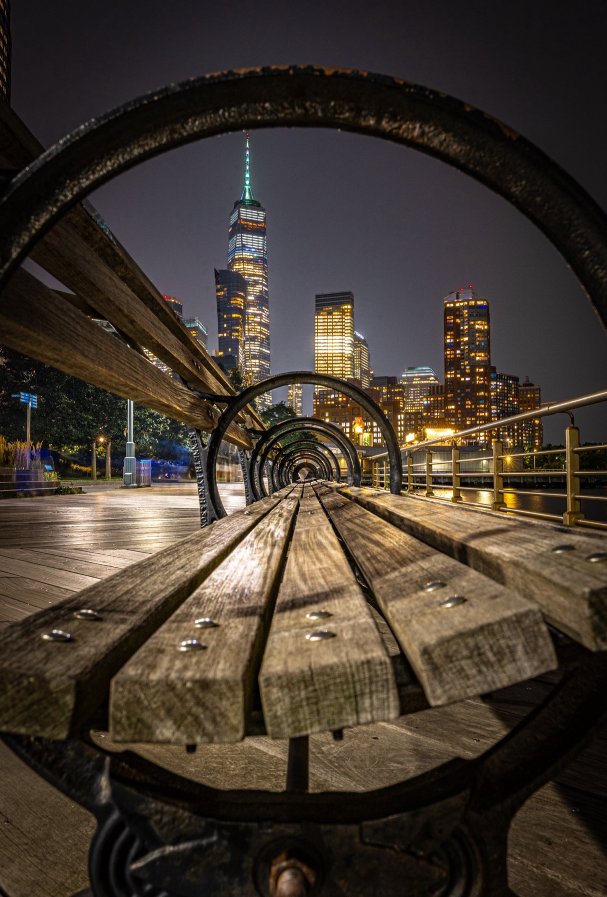
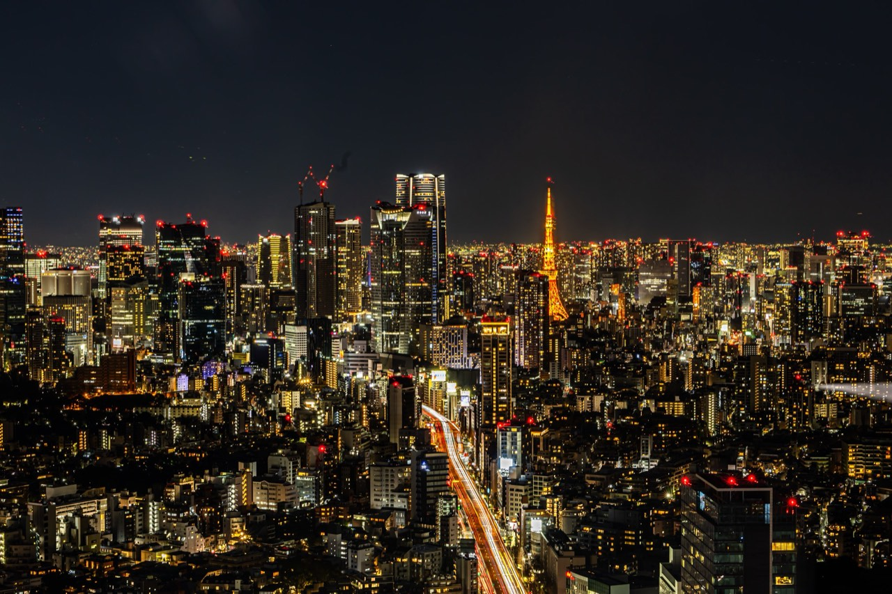
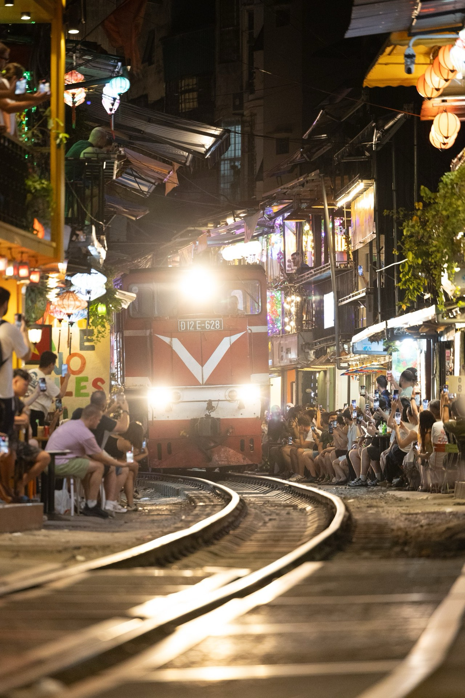

1/4000sf/2.8111mmISO 100How it was made
Mount FujiShizuoka, Japan

Mount FujiShizuoka, Japan

Milky Way over TekapoLake Tekapo, New Zealand

Bunkers del CarmelBarcelona, Spain

The Chair, BrooklynNew York, United States

Tokyo at nightTokyo, Japan

Train StreetHanoi, Vietnam